Veebruar 2026
Aruande kuupäev: 2026-03-02
Varade maht kasvas
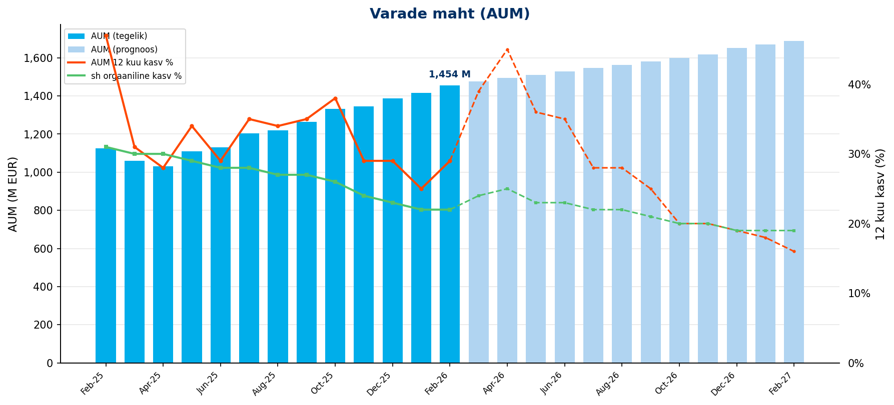
| KPI | Veebruar 2026 |
|---|---|
| AUM kuu lõpus | 1454 M EUR |
| AUM 12 kuu kasv | 29% |
| sh sissemaksetest ja vahetustest | 22% |
kasvu allikaks olid
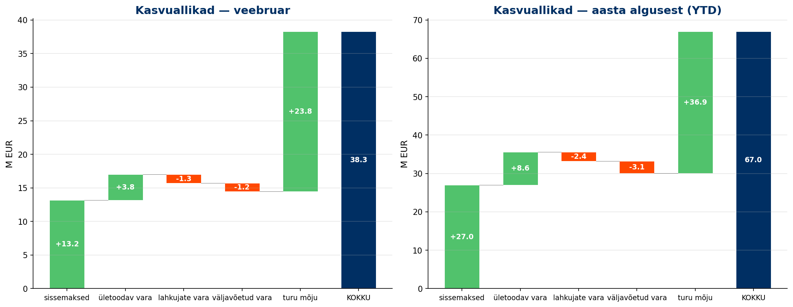
kogujate arv
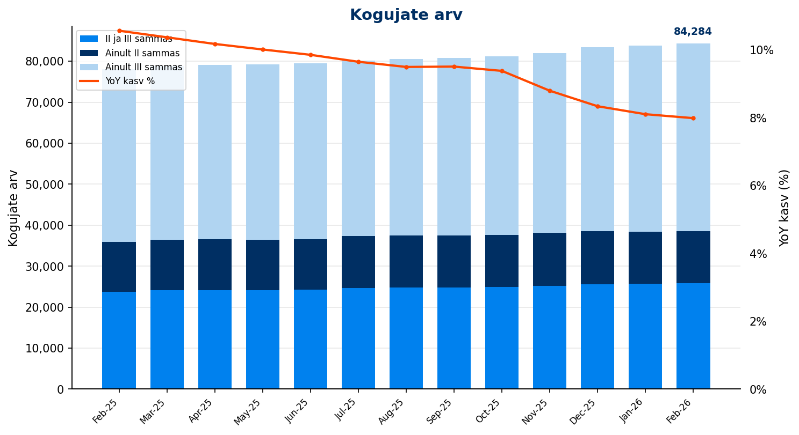
| KPI | Veebruar 2026 |
|---|---|
| Kogujate arv | 84,284 |
| sh ainult II sammas | 12,720 |
| sh ainult III sammas | 45,719 |
| sh II ja III sammas | 25,845 |
| YoY kasv | 8.0% |
uusi kogujaid saime
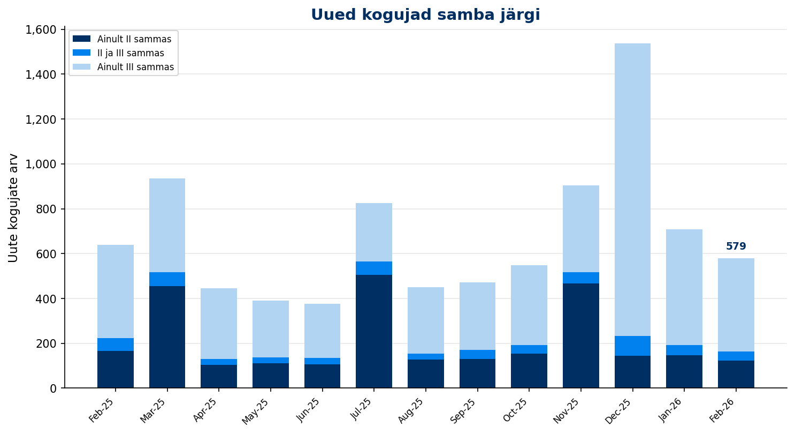
| KPI | Veebruar 2026 | YTD |
|---|---|---|
| Uued kogujad | 579 | 1,288 |
| YoY muutus | -9.4% | |
| sh uued II samba kogujad | 269 | 594 |
| sh uued III samba kogujad | 582 | 1,253 |
tehti sissemakseid
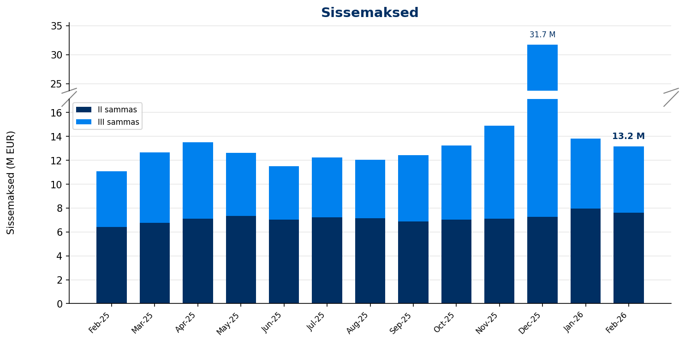
| KPI | Veebruar 2026 | YTD |
|---|---|---|
| II samba sissemaksed | 7.6 M EUR | 15.6 M EUR |
| III samba sissemaksed | 5.6 M EUR | 11.4 M EUR |
kasvavad
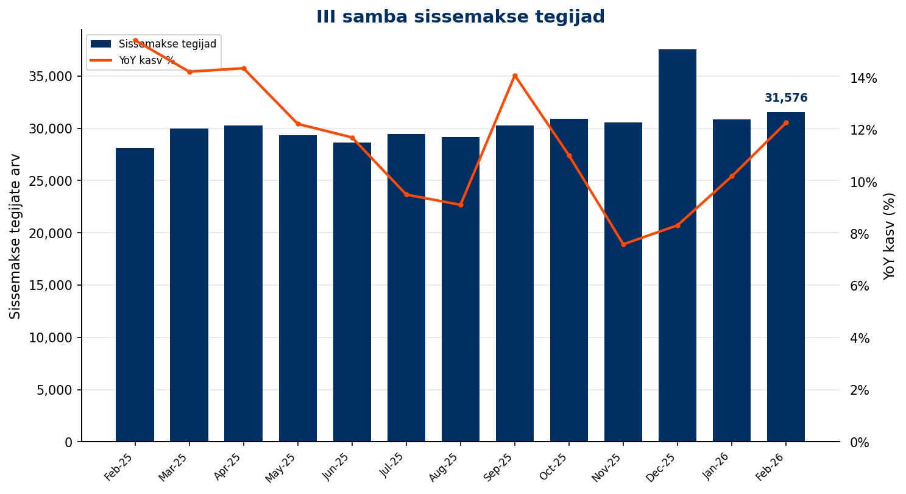
| KPI | Veebruar 2026 | YTD |
|---|---|---|
| Sissemakse tegijate arv | 31,576 | 33,606 |
| YoY kasv | 12.3% | |
| Püsimakse tegijate osakaal | 74.0% |
| KPI | Veebruar 2026 | YTD |
|---|---|---|
| Maksemäära tõstnud | 162 | 335 |
| Maksemäära langetanud | 27 | 82 |
vahetati ka
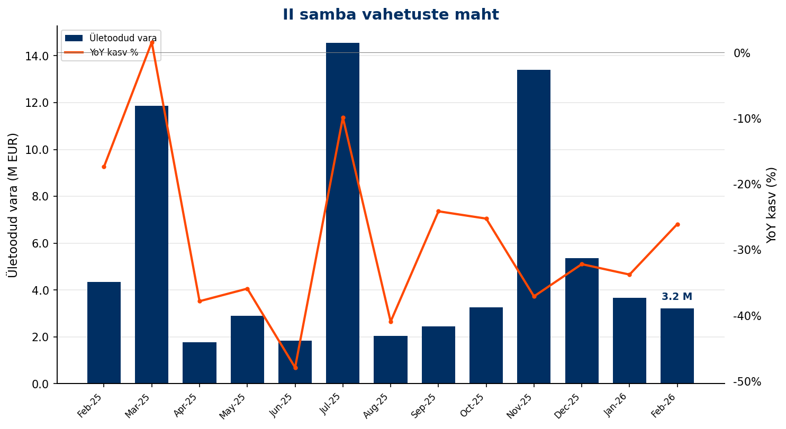
| KPI | Veebruar 2026 | YoY | YTD |
|---|---|---|---|
| Sissevahetajate arv | 234 | -29.5% | 483 |
| Ületoodud vara | 3.2 M EUR | -26.1% | 6.9 M EUR |
oli hea
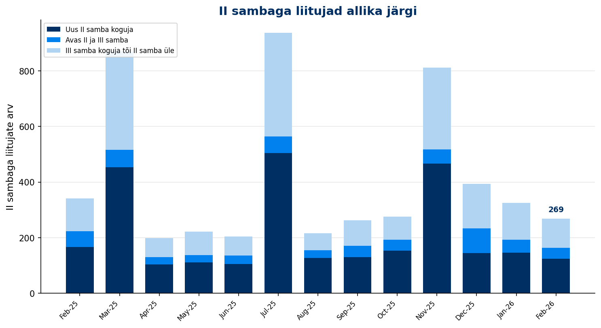
samad mis varasematel aastatel
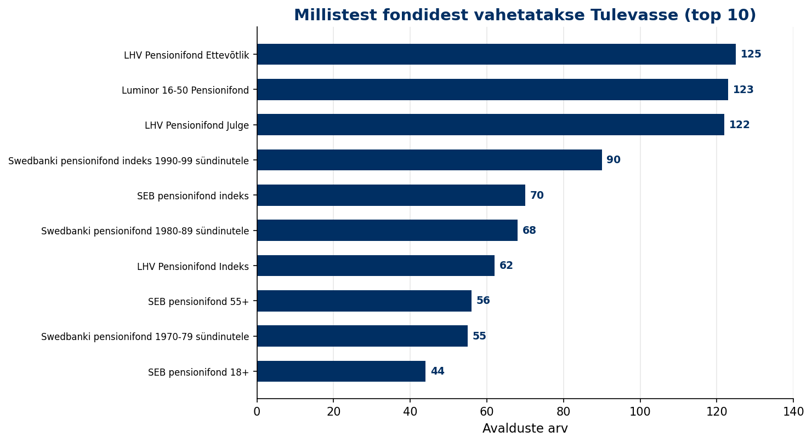
osa vara läks välja
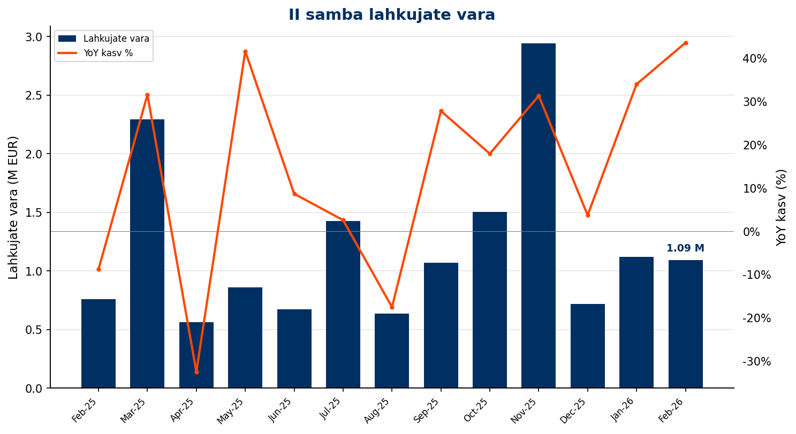
raha võeti välja
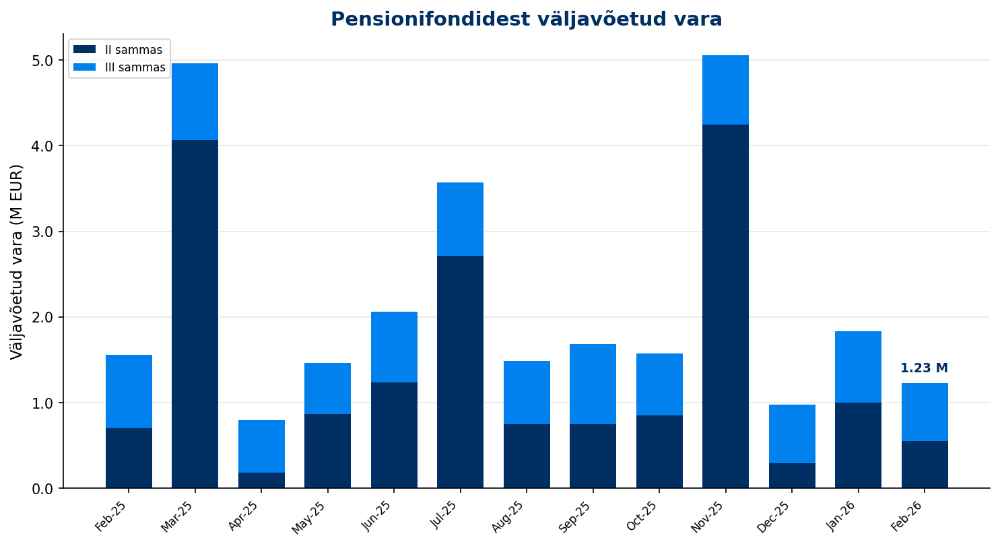
| KPI | Veebruar 2026 | YoY | YTD |
|---|---|---|---|
| II samba lahkujate vara | 1.1 M EUR | 43.5% | 2.2 M EUR |
| II samba väljujate vara | 0.6 M EUR | -21.5% | 1.6 M EUR |
| III sambast väljavõetud vara | 0.7 M EUR | -20.9% | 1.5 M EUR |
osaku hind tõusis
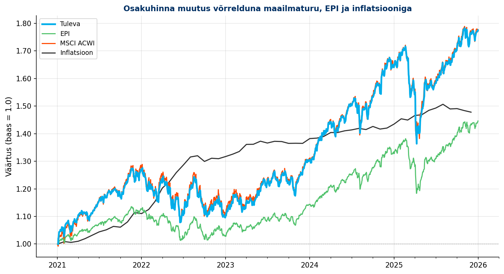
tootlus on olnud hea
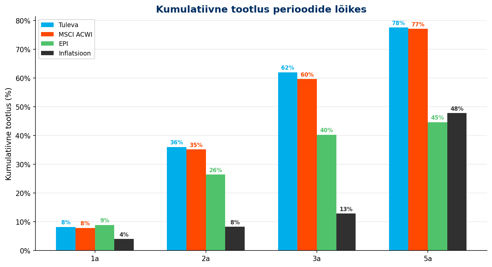
finantsid olid head
| KPI | Veebruar 2026 | YoY |
|---|---|---|
| Brutomarginaal pärast litsentsitasu | 148,512 EUR | 2% |
| Tööjõukulud | -79,031 EUR | -22% |
| Mitmesugused tegevuskulud | -18,747 EUR | -11% |
| Ebitda/ärikasum | 50,734 EUR | 116% |
| Puhaskasum | 44,434 EUR | 136% |
| Litsentsitasu ühistule | 59,080 EUR | 26% |
Aruanne genereeritud Tuleva Reporting Engine'iga